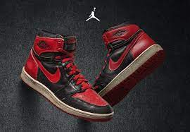
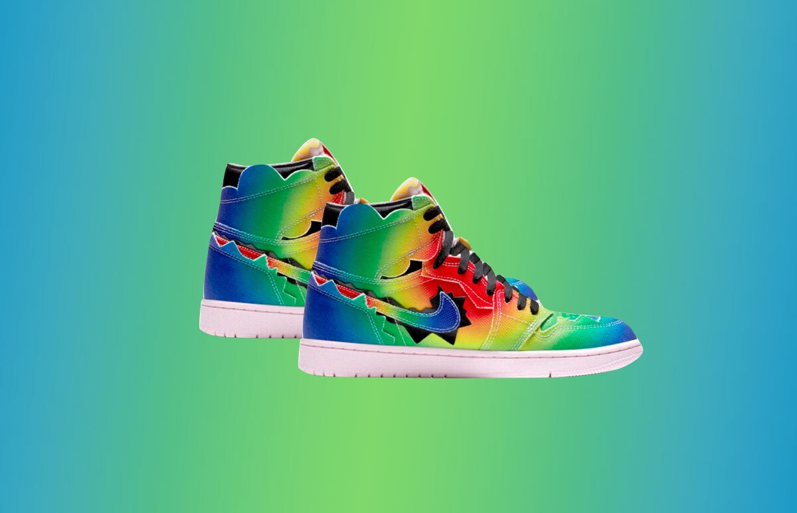
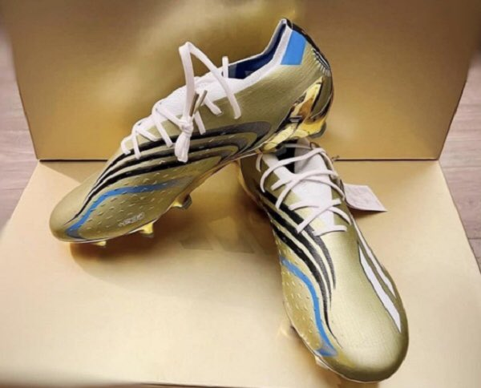
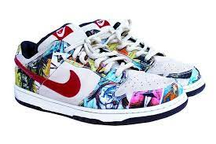

| Jordan |
 |
En 1985 se diseñaron las Air Jordan I a partir de los materiales
más innovadores y de mejor calidad del momento. El icono afianzó
para siempre la historia de las zapatillas, pero la línea Air Jordan
ha seguido evolucionando a partir de sus predecesoras
Su estética clásica y retro sigue siendo codiciada por los amantes de
los tenis; además, tienen una historia de fondo inspirada en uno de los mejores
deportistas del planeta. ¿Cómo no considerarlos como los mejores de todos los tiempos?
|
$2,399.00 |
| Jordan J balvin |
 |
J Balvin comenzó a trabajar con un equipo de Jordan Brand conformado
por especialistas en mercado de productos, creativos y desarrolladores;
entre ellos, el diseñador de los modelos NRG Frank Cooke, quien por
coincidencia estuvo presente en aquel evento de YouTube TV en 2018.1 ene 2022
|
$34,999.99 |
| Messi Qatar |
 |
El nuevo calzado de Messi para Qatar 2022
Se trata del lujoso calzado Adidas Leo Messi X Speedportal Leyenda,
unos tenis de fútbol en color dorado, el cual, hace alusión al color
del trofeo mundialista, y con detalles albicelestes, representativos a
la Selección Argenina.
La edición del 2022 llevó el nombre de “Leo Messi X-Speedportal Leyenda”.
Estos botines están inspirados en los "Adidas F50 Tunit", los que vistió Messi
en su primer mundial hace 16 años.20 dic 2022
|
$7,100.23 |
Nike mundo |
 |
Si tus Nike son originales, estos vendrán con una caja expresamente
diseñada para ese modelo. Además, en ella no solo figurará la talla,
sino también un número de referencia del producto que lo identifica
como artículo original.
|
$23,100.23 |